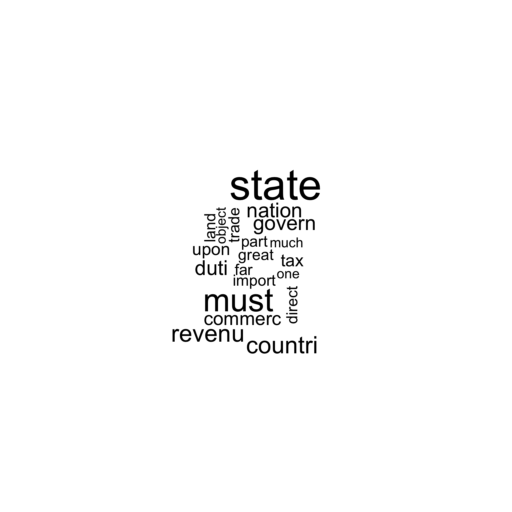
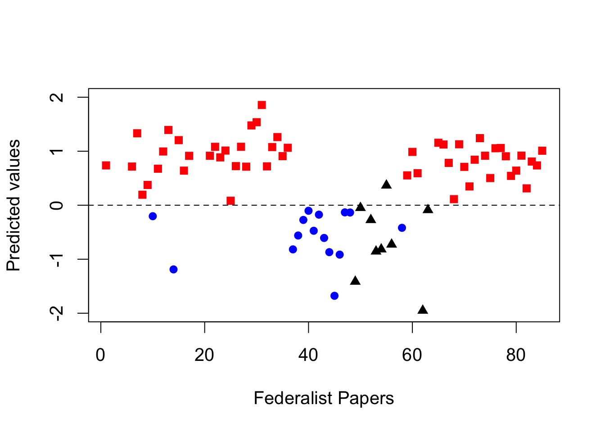

library(quanteda)In this vignette we show how the quanteda package can be used to replicate the text analysis part (Chapter 5.1) from Kosuke Imai’s book Quantitative Social Science: An Introduction (Princeton: Princeton University Press, 2017).
To get the textual data, you need to install and load the qss package first that comes with the book.
Next, we transform the corpus to a document-feature matrix. dfm_prep (used in sections 5.1.4 and 5.1.5) is a dfm in which numbers and punctuation have been removed, and in which terms have been converted to lowercase. In dfm_papers, the words have also been stemmed and a standard set of stopwords removed.
# transform corpus to a document-feature matrix
remove_punct = TRUE, verbose = TRUE)## Creating a dfm from a corpus input...## ... lowercasing## ... found 85 documents, 8,630 features## ... created a 85 x 8,630 sparse dfm
## ... complete.
## Elapsed time: 0.32 seconds.# remove stop words and stem words
# inspect some documents in the dfm
head(dfm_papers, nf = 8)## Document-feature matrix of: 6 documents, 8 features (50% sparse).
## 6 x 8 sparse Matrix of class "dfm"
## features
## docs unequivoc experi ineffici subsist feder govern call upon
## No. 1 1 1 1 1 1 9 1 6
## No. 2 0 3 0 0 2 9 1 1
## No. 3 0 1 0 0 2 20 0 0
## No. 4 0 2 0 0 0 21 1 0
## No. 5 0 1 0 0 0 3 0 0
## No. 6 0 3 0 0 0 4 0 4We can use the textplot_wordcloud() function to plot word clouds of the most frequent words in Papers 12 and 24.
set.seed(100)

Next, we identify clusters of similar essay based on term frequency-inverse document frequency (tf-idf) and apply the \(k\)-means algorithm to the weighted dfm.
# tf-idf calculation
# 10 most important words for Paper No. 12
## feature frequency rank docfreq group
## 1 revenu 19.42088 1 1 all
## 2 patrol 19.22817 2 1 all
## 3 contraband 19.22817 3 1 all
## 4 excis 19.12214 4 1 all
## 5 coast 16.22817 5 1 all
## 6 trade 15.01500 6 1 all
## 7 per 14.47329 7 1 all
## 8 tax 13.20080 8 1 all
## 9 cent 12.81878 9 1 all
## 10 gallon 12.81878 10 1 all# 10 most important words for Paper No. 24
## feature frequency rank docfreq group
## 1 garrison 24.524777 1 1 all
## 2 dock-yard 19.228173 2 1 all
## 3 settlement 16.228173 3 1 all
## 4 spain 13.637564 4 1 all
## 5 armi 12.770999 5 1 all
## 6 frontier 12.262389 6 1 all
## 7 arsenal 10.818782 7 1 all
## 8 western 10.806108 8 1 all
## 9 post 10.228173 9 1 all
## 10 nearer 9.648857 10 1 allk <- 4 # number of clusters
# subset The Federalist papers written by Hamilton
hamilton <- c(1, 6:9, 11:13, 15:17, 21:36, 59:61, 65:85)
dfm_papers_tfidf_hamilton <- dfm_papers_tfidf[hamilton, ]
# run k-means
km_out <- kmeans(dfm_papers_tfidf_hamilton, centers = k)
km_out$iter # check the convergence; number of iterations may vary
## [1] 5
for (i in 1:k) { # loop for each cluster
cat("CLUSTER", i, "\n")
cat("Top 10 words:\n") # 10 most important terms at the centroid
print(head(sort(km_out$centers[i, ], decreasing = TRUE), n = 10))
cat("\n")
cat("Federalist Papers classified: \n") # extract essays classified
print(rownames(dfm_papers_tfidf_hamilton)[km_out$cluster == i])
cat("\n")
}## CLUSTER 1
## Top 10 words:
## juri trial court crimin admiralti equiti
## 218.20102 84.74567 62.47940 42.06871 40.87463 38.24428
## chanceri probat common-law civil
## 37.86574 27.04695 27.04695 26.77843
##
## Federalist Papers classified:
## [1] "No. 83"
##
## CLUSTER 2
## Top 10 words:
## court appel jurisdict suprem juri tribun cogniz
## 69.68857 35.27513 25.46591 24.79126 22.16104 21.27125 19.12214
## inferior appeal re-examin
## 18.76875 16.21098 13.52348
##
## Federalist Papers classified:
## [1] "No. 81" "No. 82"
##
## CLUSTER 3
## Top 10 words:
## senat upon armi court claus presid land tax
## 3.630311 3.597576 2.639599 2.624612 2.523957 2.249028 2.206821 2.206821
## militia revenu
## 2.103774 2.103616
##
## Federalist Papers classified:
## [1] "No. 1" "No. 6" "No. 7" "No. 8" "No. 9" "No. 11" "No. 12"
## [8] "No. 13" "No. 15" "No. 16" "No. 17" "No. 21" "No. 22" "No. 23"
## [15] "No. 24" "No. 25" "No. 26" "No. 27" "No. 28" "No. 29" "No. 30"
## [22] "No. 31" "No. 32" "No. 33" "No. 34" "No. 35" "No. 36" "No. 59"
## [29] "No. 60" "No. 61" "No. 65" "No. 66" "No. 67" "No. 68" "No. 70"
## [36] "No. 71" "No. 72" "No. 73" "No. 74" "No. 75" "No. 76" "No. 77"
## [43] "No. 78" "No. 79" "No. 80" "No. 84" "No. 85"
##
## CLUSTER 4
## Top 10 words:
## governor presid king york treason adjourn pardon treati
## 70.79902 33.82538 30.18507 24.81755 22.04695 21.63756 20.43731 16.02036
## britain resembl
## 15.50330 13.63756
##
## Federalist Papers classified:
## [1] "No. 69"Finally, we assess how well the model fits the data by classifying each essay based on its fitted value.
# proportion of correctly classified essays by Hamilton
mean(hm_fitted[author_data$author == 1] > 0)## [1] 1# proportion of correctly classified essays by Madison
mean(hm_fitted[author_data$author == -1] < 0)## [1] 1n <- nrow(author_data)
hm_classify <- rep(NA, n) # a container vector with missing values
for (i in 1:n) {
# fit the model to the data after removing the ith observation
sub_fit <- lm(author ~ upon + there + consequently + whilst,
data = author_data[-i, ]) # exclude ith row
# predict the authorship for the ith observation
hm_classify[i] <- predict(sub_fit, newdata = author_data[i, ])
}
# proportion of correctly classified essays by Hamilton
mean(hm_classify[author_data$author == 1] > 0)## [1] 1# proportion of correctly classified essays by Madison
mean(hm_classify[author_data$author == -1] < 0)## [1] 1disputed <- c(49, 50:57, 62, 63) # 11 essays with disputed authorship
tf_disputed <- as.data.frame(dtm1[disputed, ])
# prediction of disputed authorship
pred <- predict(hm_fit, newdata = tf_disputed)
pred # predicted values
## No. 49 No. 50 No. 51 No. 52 No. 53 No. 54
## -1.41472721 -0.04889739 -2.55659890 -0.27285552 -0.85511475 -0.81637448
## No. 55 No. 56 No. 57 No. 62 No. 63
## 0.36609304 -0.72732503 -2.27521263 -1.95169291 -0.08837647# plot the fitted values for each Federalist paper
par(cex = 1.25)
# fitted values for essays authored by Hamilton; red squares
plot(hamilton, hm_fitted[author_data$author == 1], pch = 15,
xlim = c(1, 85), ylim = c(-2, 2), col = "red",
xlab = "Federalist Papers", ylab = "Predicted values")
abline(h = 0, lty = "dashed")
# essays authored by Madison; blue circles
points(madison, hm_fitted[author_data$author == -1],
pch = 16, col = "blue")
# disputed authorship; black triangles
points(disputed, pred, pch = 17)